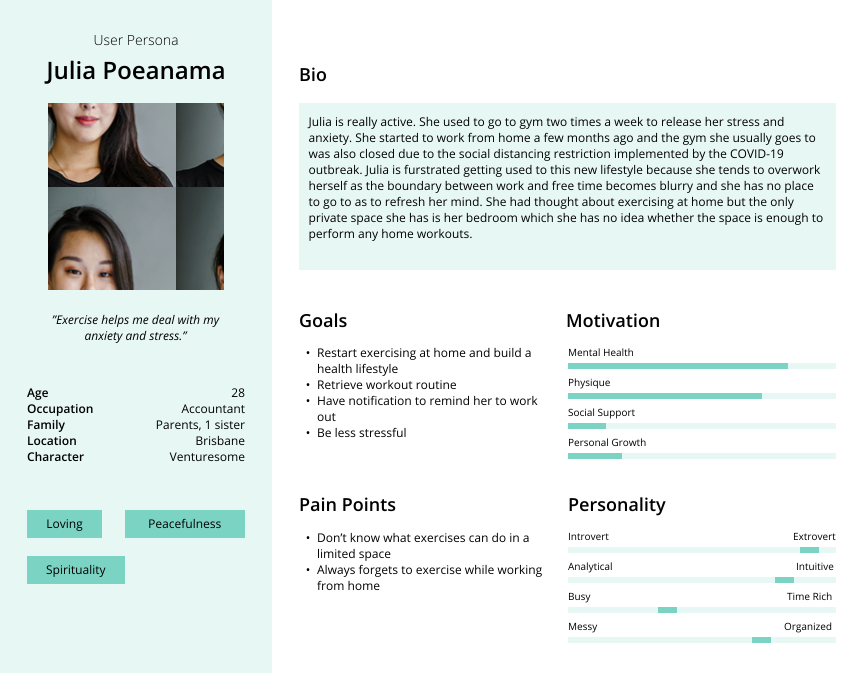
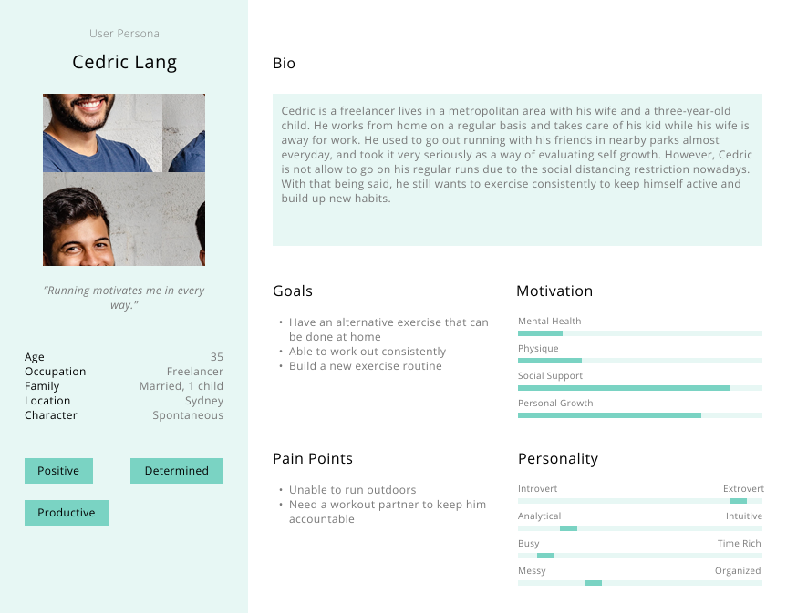

Overview
FitBuddy is a workout app for everyone who is looking to start or reestablish a workout routine. Apart from the inbuilt exercises and programs, the app introduces the opportunity for users to choose workouts based on the size of their available space, and support other users within the community. The app also allows users to video call their friend and work out together. Ultimately, FitBuddy aims to motivate people conduct physical activity and help them maintain or retrieve healthy lifestyles.
Objective
This project is to understand how to improve and motivate people in performing more physical activity during the COVID-19 pandemic and produce a working prototype to assist users achieve their goals in an UX practice.
Workflow

Background Research
The limitations and restrictions put in place during the pandemic have demotivated people from being physically active as they lose their usual routines. Aside from mental exhaustions, people are also less likely to exercise or do relaxing activities such as yoga in general. In an effort to motivate people to be more active and create a healthy fitness routine, it’s essential for organisations to promote the importance of being active and how people can start doing so. We found that the key factor in motivating people is for them to have their own intrinsic (personal) reason or purpose to work out. Additionally, having diverse exercise and tailoring options, right atmosphere, environment or space, a motivation incentive system and an accountable and motivating partner also make it easier for people to start being active again.
Research Findings
Emphasis
With the research and analysis in mind, we completed two user personas that allow us to visualize users’ needs and frustrations.
 Analyze
To understand what the current products on the market have to offer, we, a group of three, performed an online ethnographic study and a competitor analysis over 12 existent products. Most of the similar products around the market offer support network, progress trackers, a sense of customization, a variety of workout types and levels of difficulty. However, users would like to have more personalization and customization options, in-depth exercise instructions and an Immersive user experience.
Problem Statement
How can we promote and motivate people conduct physical activity especially living in a limited space and lacking social support?
Iteration
Each of us produced an idea that response to the user needs including:
1. A habit tracker inspired app that focuses on both mental and physical health and is high in customization.
2. A gamification style app that embedded video call feature for users to exercise with their friends.
3. A spatial scanner app that generates exercises based on users’ available space.
We then presented these ideas to our ideal users for feedback and improvements. It was decided as a team that we combined the gamification style app and the spatial scanner app. With two more rounds of iteration and user testing, the FitBuddy app was born.

On-boarding
Based on the user feedback, FitBuddy is impelmented with an on-boarding system showing them how to deleted unwanted exercises or programes.
Workout Buddy
One exciting feature provides by FitBuddy is the video call function. Users can deliver or accept invitation to/from their friends and perform exercises with them. With this additional social support, users are more likely to stay motivated and accountable.
Customisation
FitBuddy is high in customization. Users can opt to filter out exercises and programs by level, intensity, etc. Most importantly, they can filter out exercises and programs based on their available workout space. Users can also customize their workout programs and set reminders to keep them accountable.
Support and Motivation
The plan page allows users to browse through their exercises and programs across the week. The social community provides the support system for users to make posts, comments and interact with others within the community. The achievement section in the profile page promotes and motivates users in performing exercises.